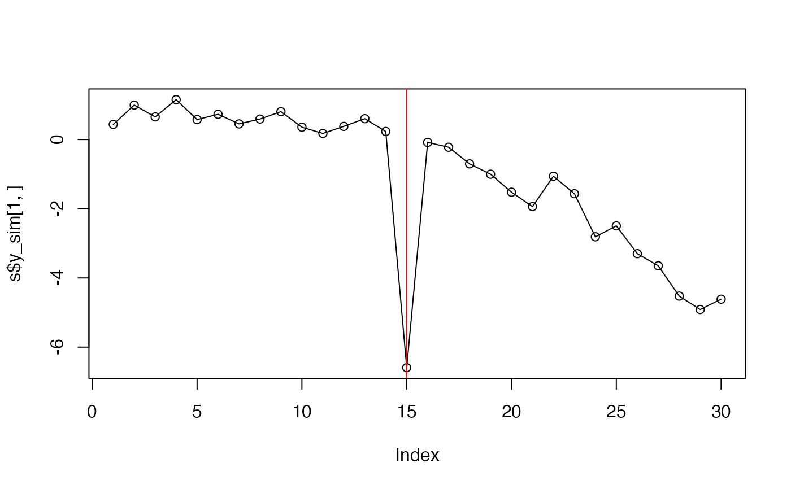
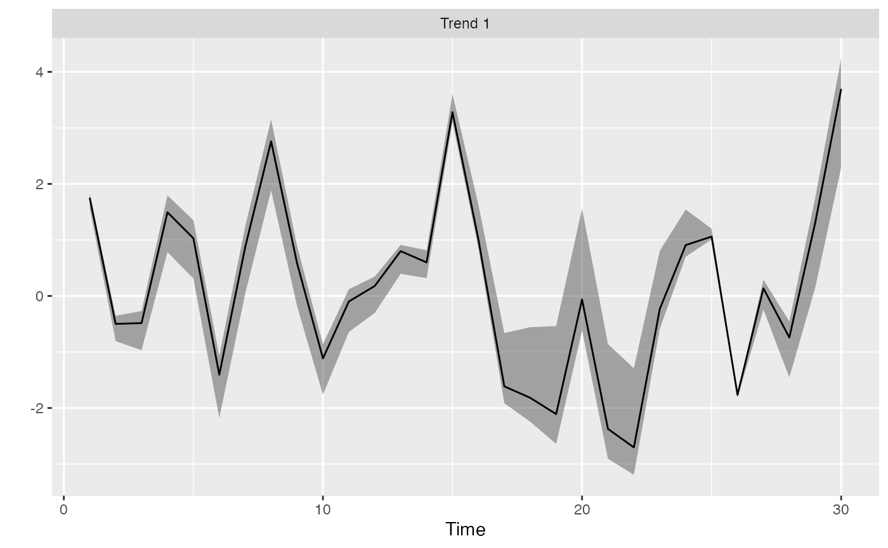
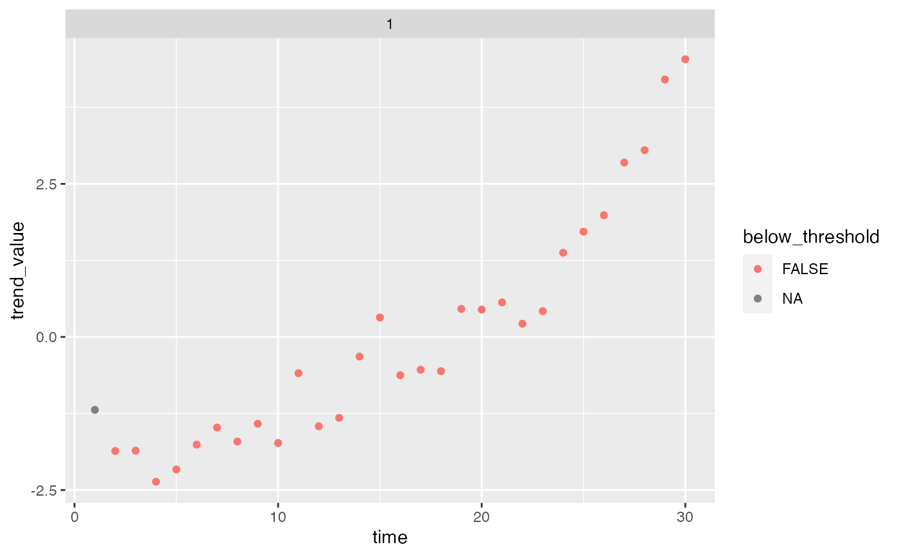

Find outlying "black swan" jumps in trends
find_swans(rotated_modelfit, threshold = 0.01, plot = FALSE)
| rotated_modelfit | Output from |
|---|---|
| threshold | A probability threshold below which to flag trend events as extreme |
| plot | Logical: should a plot be made? |
Prints a ggplot2 plot if plot = TRUE; returns a data frame indicating the
probability that any given point in time represents a "black swan" event
invisibly.
Anderson, S.C., Branch, T.A., Cooper, A.B., and Dulvy, N.K. 2017. Black-swan events in animal populations. Proceedings of the National Academy of Sciences 114(12): 3252–3257. https://doi.org/10.1073/pnas.1611525114
set.seed(1) s <- sim_dfa(num_trends = 1, num_ts = 3, num_years = 30) s$y_sim[1, 15] <- s$y_sim[1, 15] - 6 plot(s$y_sim[1,], type = "o")# only 1 chain and 250 iterations used so example runs quickly: m <- fit_dfa(y = s$y_sim, num_trends = 1, iter = 50, chains = 1, nu_fixed = 2)#> #> SAMPLING FOR MODEL 'dfa' NOW (CHAIN 1). #> Chain 1: #> Chain 1: Gradient evaluation took 3.8e-05 seconds #> Chain 1: 1000 transitions using 10 leapfrog steps per transition would take 0.38 seconds. #> Chain 1: Adjust your expectations accordingly! #> Chain 1: #> Chain 1: #> Chain 1: WARNING: There aren't enough warmup iterations to fit the #> Chain 1: three stages of adaptation as currently configured. #> Chain 1: Reducing each adaptation stage to 15%/75%/10% of #> Chain 1: the given number of warmup iterations: #> Chain 1: init_buffer = 3 #> Chain 1: adapt_window = 20 #> Chain 1: term_buffer = 2 #> Chain 1: #> Chain 1: Iteration: 1 / 50 [ 2%] (Warmup) #> Chain 1: Iteration: 5 / 50 [ 10%] (Warmup) #> Chain 1: Iteration: 10 / 50 [ 20%] (Warmup) #> Chain 1: Iteration: 15 / 50 [ 30%] (Warmup) #> Chain 1: Iteration: 20 / 50 [ 40%] (Warmup) #> Chain 1: Iteration: 25 / 50 [ 50%] (Warmup) #> Chain 1: Iteration: 26 / 50 [ 52%] (Sampling) #> Chain 1: Iteration: 30 / 50 [ 60%] (Sampling) #> Chain 1: Iteration: 35 / 50 [ 70%] (Sampling) #> Chain 1: Iteration: 40 / 50 [ 80%] (Sampling) #> Chain 1: Iteration: 45 / 50 [ 90%] (Sampling) #> Chain 1: Iteration: 50 / 50 [100%] (Sampling) #> Chain 1: #> Chain 1: Elapsed Time: 0.005232 seconds (Warm-up) #> Chain 1: 0.057695 seconds (Sampling) #> Chain 1: 0.062927 seconds (Total) #> Chain 1:#> Warning: There were 1 chains where the estimated Bayesian Fraction of Missing Information was low. See #> http://mc-stan.org/misc/warnings.html#bfmi-low#> Warning: Examine the pairs() plot to diagnose sampling problems#> Warning: The largest R-hat is 2.1, indicating chains have not mixed. #> Running the chains for more iterations may help. See #> http://mc-stan.org/misc/warnings.html#r-hat#> Warning: Bulk Effective Samples Size (ESS) is too low, indicating posterior means and medians may be unreliable. #> Running the chains for more iterations may help. See #> http://mc-stan.org/misc/warnings.html#bulk-ess#> Warning: Tail Effective Samples Size (ESS) is too low, indicating posterior variances and tail quantiles may be unreliable. #> Running the chains for more iterations may help. See #> http://mc-stan.org/misc/warnings.html#tail-ess#> Inference for the input samples (1 chains: each with iter = 25; warmup = 12): #> #> Q5 Q50 Q95 Mean SD Rhat Bulk_ESS Tail_ESS #> x[1,1] 1.6 1.8 1.8 1.7 0.1 2.06 4 13 #> x[1,2] -0.8 -0.4 -0.4 -0.6 0.2 2.06 4 13 #> x[1,3] -1.0 -0.4 -0.4 -0.6 0.3 2.06 4 13 #> x[1,4] 0.8 1.6 1.7 1.3 0.4 2.06 4 13 #> x[1,5] 0.3 1.2 1.2 0.8 0.4 2.06 4 13 #> x[1,6] -2.2 -1.2 -1.2 -1.6 0.5 2.06 4 13 #> x[1,7] 0.0 1.0 1.1 0.6 0.5 2.06 4 13 #> x[1,8] 1.9 2.9 3.0 2.5 0.5 2.06 4 13 #> x[1,9] -0.2 0.7 0.7 0.4 0.4 2.06 4 13 #> x[1,10] -1.8 -1.0 -1.0 -1.3 0.3 2.06 4 13 #> x[1,11] -0.6 0.0 0.0 -0.2 0.3 2.06 4 13 #> x[1,12] -0.3 0.2 0.2 0.1 0.2 2.06 3 13 #> x[1,13] 0.4 0.8 0.8 0.7 0.2 2.06 4 13 #> x[1,14] 0.3 0.6 0.8 0.6 0.2 2.06 8 13 #> x[1,15] 3.1 3.2 3.6 3.3 0.2 2.06 8 13 #> x[1,16] 0.9 0.9 1.6 1.1 0.3 2.06 3 13 #> x[1,17] -1.8 -1.8 -0.7 -1.4 0.5 2.06 3 13 #> x[1,18] -2.1 -2.1 -0.6 -1.5 0.7 2.06 4 13 #> x[1,19] -2.5 -2.5 -0.5 -1.7 0.9 2.06 3 13 #> x[1,20] -0.4 -0.4 1.6 0.4 0.9 2.06 3 13 #> x[1,21] -2.7 -2.7 -0.9 -2.0 0.9 2.06 3 13 #> x[1,22] -3.0 -3.0 -1.3 -2.3 0.8 2.06 3 13 #> x[1,23] -0.5 -0.5 0.8 0.0 0.6 2.06 3 13 #> x[1,24] 0.8 0.8 1.5 1.1 0.4 2.06 4 13 #> x[1,25] 1.0 1.0 1.2 1.1 0.1 2.06 4 13 #> x[1,26] -1.8 -1.8 -1.7 -1.8 0.0 2.06 4 13 #> x[1,27] -0.2 0.2 0.2 0.0 0.2 2.06 4 13 #> x[1,28] -1.4 -0.6 -0.6 -1.0 0.4 2.06 4 13 #> x[1,29] 0.2 1.6 1.6 1.0 0.7 2.06 4 13 #> x[1,30] 2.3 4.0 4.1 3.3 0.8 2.06 4 13 #> Z[1,1] 0.6 0.6 0.6 0.6 0.0 2.06 4 13 #> Z[2,1] -9.4 33.5 33.9 17.9 18.7 2.06 4 13 #> Z[3,1] -15.6 38.9 39.1 20.3 23.2 2.06 4 13 #> log_lik[1] -3.8 -1.8 -1.7 -2.7 1.0 2.06 4 13 #> log_lik[2] -351.8 -307.8 -3.8 -181.1 171.2 2.06 4 13 #> log_lik[3] -470.4 -414.7 -4.0 -242.4 229.8 2.06 4 13 #> log_lik[4] -3.8 -1.9 -1.9 -2.8 1.0 2.06 4 13 #> log_lik[5] -23.8 -21.9 -3.7 -14.2 10.0 2.06 3 13 #> log_lik[6] -30.6 -28.3 -3.8 -17.8 13.3 2.06 3 13 #> log_lik[7] -3.8 -1.9 -1.8 -2.7 1.0 2.06 4 13 #> log_lik[8] -18.8 -17.8 -3.8 -11.7 7.5 2.06 3 13 #> log_lik[9] -24.5 -23.3 -3.8 -14.7 10.3 2.06 3 13 #> log_lik[10] -3.8 -1.8 -1.7 -2.7 1.0 2.06 4 13 #> log_lik[11] -299.3 -257.2 -3.8 -153.3 144.6 2.06 3 13 #> log_lik[12] -400.6 -347.0 -3.8 -205.1 194.5 2.06 3 13 #> log_lik[13] -3.8 -1.8 -1.7 -2.7 1.0 2.06 4 13 #> log_lik[14] -157.1 -132.9 -3.8 -80.8 74.6 2.06 3 13 #> log_lik[15] -209.4 -178.5 -3.8 -107.4 100.2 2.06 3 13 #> log_lik[16] -3.8 -2.0 -2.0 -2.8 0.9 2.06 4 13 #> log_lik[17] -175.0 -160.1 -3.8 -92.7 85.4 2.06 3 13 #> log_lik[18] -231.8 -213.7 -4.1 -122.9 113.7 2.06 3 13 #> log_lik[19] -3.8 -1.8 -1.7 -2.7 1.0 2.06 4 13 #> log_lik[20] -121.5 -101.8 -3.7 -62.6 57.0 2.06 4 13 #> log_lik[21] -162.7 -137.2 -3.7 -83.4 77.1 2.06 3 13 #> log_lik[22] -3.8 -1.9 -1.8 -2.7 1.0 2.06 4 13 #> log_lik[23] -967.4 -834.3 -3.8 -492.2 472.1 2.06 4 13 #> log_lik[24] -1292.4 -1123.4 -4.1 -658.9 632.4 2.06 4 13 #> log_lik[25] -3.8 -1.8 -1.8 -2.7 1.0 2.06 4 13 #> log_lik[26] -58.6 -47.8 -3.7 -30.8 26.3 2.06 4 13 #> log_lik[27] -78.0 -64.0 -3.7 -40.5 35.7 2.06 4 13 #> log_lik[28] -3.8 -1.9 -1.9 -2.8 1.0 2.06 4 13 #> log_lik[29] -119.3 -110.5 -3.8 -63.9 57.8 2.06 3 13 #> log_lik[30] -157.8 -147.2 -3.9 -84.4 77.0 2.06 3 13 #> log_lik[31] -3.8 -1.8 -1.8 -2.7 1.0 2.06 4 13 #> log_lik[32] -3.9 -2.1 -1.8 -2.8 1.0 2.06 4 13 #> log_lik[33] -4.0 -2.1 -1.8 -2.8 1.0 2.06 3 13 #> log_lik[34] -3.8 -1.8 -1.8 -2.7 1.0 2.06 4 13 #> log_lik[35] -7.1 -5.6 -3.7 -5.2 1.5 2.06 4 13 #> log_lik[36] -9.3 -7.3 -3.7 -6.3 2.5 2.06 4 13 #> log_lik[37] -3.8 -1.8 -1.7 -2.7 1.0 2.06 4 13 #> log_lik[38] -75.8 -64.4 -3.8 -40.0 35.1 2.06 3 13 #> log_lik[39] -100.9 -86.3 -3.8 -52.8 47.3 2.06 4 13 #> log_lik[40] -3.8 -1.8 -1.7 -2.7 1.0 2.06 4 13 #> log_lik[41] -37.3 -31.9 -3.8 -20.6 16.3 2.06 3 13 #> log_lik[42] -49.8 -42.9 -3.8 -27.0 22.4 2.06 4 13 #> log_lik[43] -3.9 -3.8 -3.6 -3.7 0.1 1.58 4 13 #> log_lik[44] -1157.0 -1013.8 -4.0 -592.3 567.7 2.06 4 13 #> log_lik[45] -1545.0 -1364.4 -4.9 -793.2 759.5 2.06 4 13 #> log_lik[46] -3.8 -1.8 -1.7 -2.7 1.0 2.06 4 13 #> log_lik[47] -86.6 -76.6 -3.8 -46.3 40.9 2.06 4 13 #> log_lik[48] -114.9 -102.4 -4.0 -61.1 54.8 2.06 4 13 #> log_lik[49] -3.8 -2.0 -2.0 -2.8 0.9 2.06 4 13 #> log_lik[50] -381.8 -330.4 -3.7 -195.1 185.0 2.06 3 13 #> log_lik[51] -507.1 -442.1 -3.8 -259.3 246.8 2.06 3 13 #> log_lik[52] -3.8 -2.0 -1.9 -2.8 0.9 2.06 4 13 #> log_lik[53] -509.2 -438.1 -3.7 -259.1 247.0 2.06 3 13 #> log_lik[54] -678.0 -587.8 -3.8 -345.3 330.1 2.06 3 13 #> log_lik[55] -3.8 -2.0 -2.0 -2.8 0.9 2.06 4 13 #> log_lik[56] -689.9 -592.5 -3.7 -350.1 335.0 2.06 3 13 #> log_lik[57] -921.1 -797.4 -3.8 -468.1 448.9 2.06 3 13 #> log_lik[58] -3.8 -1.8 -1.7 -2.7 1.0 2.06 4 13 #> log_lik[59] -23.0 -18.0 -3.8 -12.9 8.8 2.06 4 13 #> log_lik[60] -30.7 -24.0 -3.9 -16.8 12.3 2.06 4 13 #> log_lik[61] -3.8 -1.9 -1.9 -2.8 1.0 2.06 4 13 #> log_lik[62] -832.3 -713.7 -3.8 -421.7 404.4 2.06 3 13 #> log_lik[63] -1109.9 -959.2 -3.8 -563.3 540.9 2.06 3 13 #> log_lik[64] -3.8 -2.1 -2.1 -2.9 0.9 2.06 4 13 #> log_lik[65] -1033.3 -890.6 -3.8 -524.2 503.3 2.06 3 13 #> log_lik[66] -1376.6 -1195.7 -3.9 -699.7 672.3 2.06 3 13 #> log_lik[67] -3.8 -1.8 -1.7 -2.7 1.0 2.06 4 13 #> log_lik[68] -26.3 -21.4 -3.8 -14.6 10.5 2.06 3 13 #> log_lik[69] -34.5 -28.2 -3.8 -18.7 14.4 2.06 4 13 #> log_lik[70] -3.8 -1.9 -1.9 -2.8 1.0 2.06 4 13 #> log_lik[71] -69.7 -63.4 -3.8 -38.1 33.0 2.06 3 13 #> log_lik[72] -91.1 -83.5 -3.9 -49.6 43.6 2.06 4 13 #> log_lik[73] -3.8 -1.9 -1.9 -2.8 1.0 2.06 4 13 #> log_lik[74] -125.7 -111.6 -3.8 -66.6 60.6 2.06 3 13 #> log_lik[75] -165.3 -147.9 -3.8 -87.4 80.3 2.06 3 13 #> log_lik[76] -3.8 -1.8 -1.7 -2.7 1.0 2.06 4 13 #> log_lik[77] -333.6 -293.1 -3.8 -171.7 161.9 2.06 4 13 #> log_lik[78] -445.9 -395.0 -4.1 -229.7 217.3 2.06 4 13 #> log_lik[79] -3.8 -1.9 -1.9 -2.8 1.0 2.06 4 13 #> log_lik[80] -10.7 -9.3 -3.7 -7.2 3.3 2.06 4 13 #> log_lik[81] -13.2 -11.4 -3.8 -8.5 4.6 2.06 4 13 #> log_lik[82] -3.8 -1.9 -1.9 -2.8 1.0 2.06 4 13 #> log_lik[83] -29.9 -27.2 -3.8 -17.2 12.7 2.06 4 13 #> log_lik[84] -39.9 -36.5 -4.0 -22.5 17.5 2.06 4 13 #> log_lik[85] -3.8 -2.5 -2.5 -3.1 0.7 2.06 4 13 #> log_lik[86] -312.2 -269.1 -3.7 -160.5 151.6 2.06 4 13 #> log_lik[87] -410.7 -356.6 -3.7 -211.1 200.5 2.06 4 13 #> log_lik[88] -3.9 -3.4 -3.2 -3.5 0.3 2.06 4 13 #> log_lik[89] -1897.0 -1648.5 -3.8 -967.7 931.6 2.06 3 13 #> log_lik[90] -2515.6 -2202.8 -4.1 -1286.2 1238.1 2.06 3 13 #> psi[1] 2.5 2.5 2.5 2.5 0.0 1.33 13 13 #> xstar[1,1] 3.5 5.5 7.4 5.3 1.4 1.58 4 13 #> sigma[1] 2.3 2.4 18.6 9.3 7.8 2.06 4 13 #> lp__ -26602.9 -23549.4 -447.4 -13944.2 12781.9 2.06 3 13 #> #> For each parameter, Bulk_ESS and Tail_ESS are crude measures of #> effective sample size for bulk and tail quantities respectively (an ESS > 100 #> per chain is considered good), and Rhat is the potential scale reduction #> factor on rank normalized split chains (at convergence, Rhat <= 1.05).# a 1 in 1000 probability if was from a normal distribution: find_swans(r, plot = TRUE, threshold = 0.001)